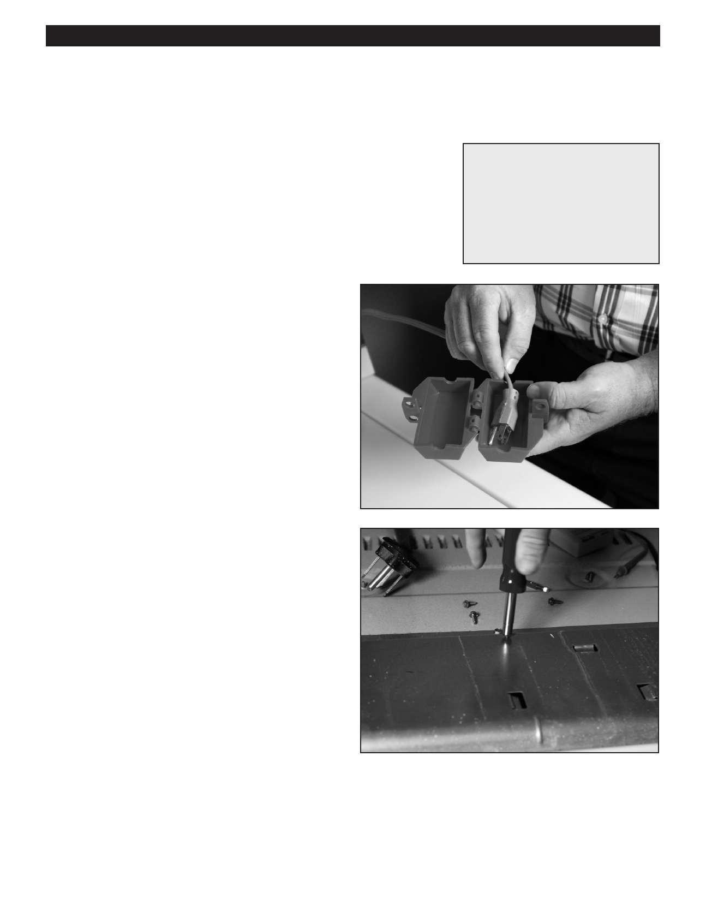

PA RT I C I PA N T R E S O U R C E G U I D E
Testing and Replacing a Dryer Start Switch
The start switch rarely malfunctions, but if you suspect it is faulty, test and replace it.
Safety
Tools and Materials Needed
Make sure the power to the dryer is off.
Lockout/tagout plug cover
Use lockout/tagout procedures.
Screwdriver
Insulated combination tool
Wear eye protection when working with electrical parts.
Multimeter
Start switch
How-to Steps
1. Unplug dryer or turn off electricity to dryer at main
electrical panel.
2. Lockout/tagout the cord or panel.
3. Remove the control panel cover.
4. Disconnect the wires.
5. Use multimeter on RX1 setting to test:
• Touch one probe to one terminal and the other probe
to the other terminal.
• Turn switch on.
• The display should show zero. If not, replace switch.
6. Reconnect switch.
7. Turn on electricity to dryer.
8. Turn on dryer and check operation.
19